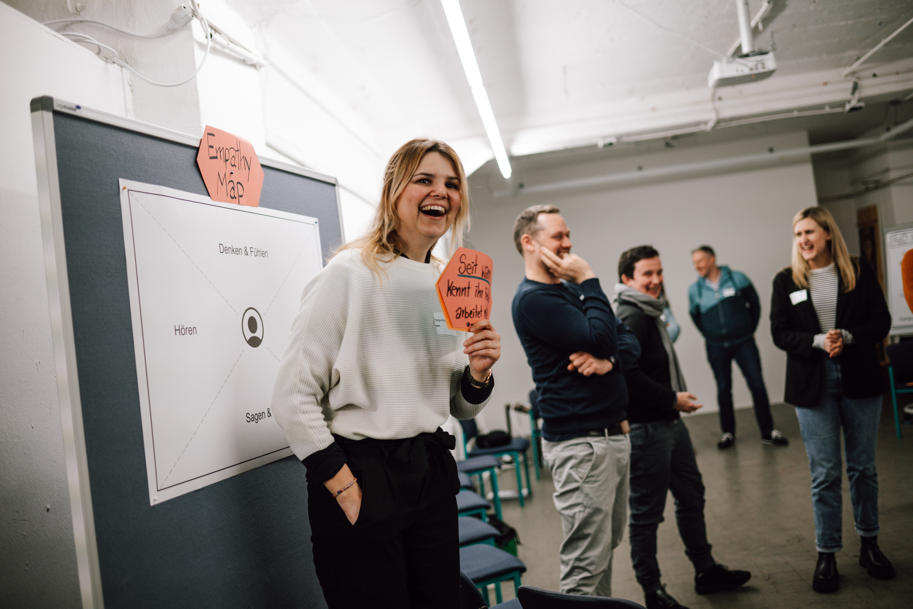
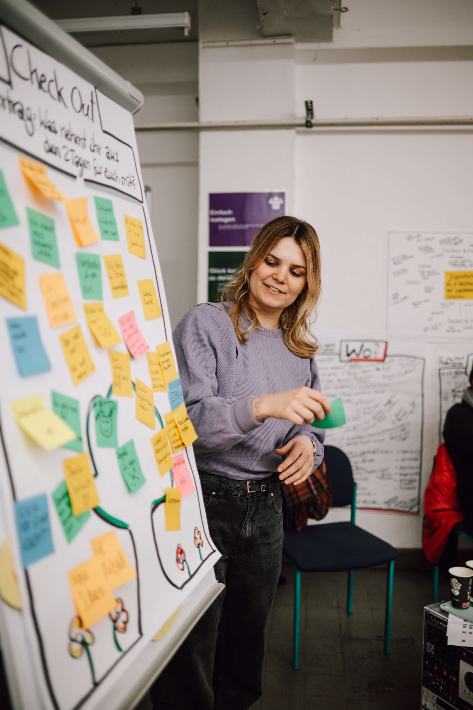
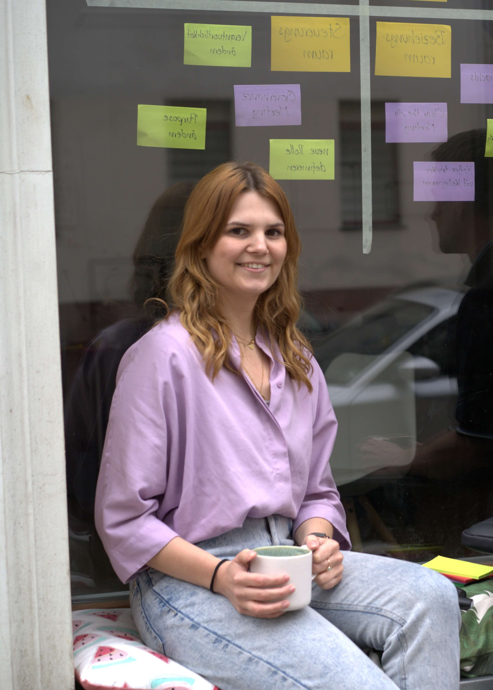
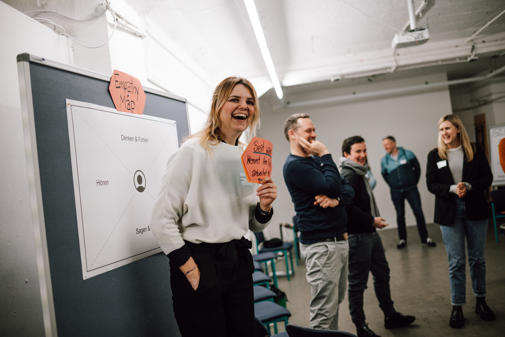
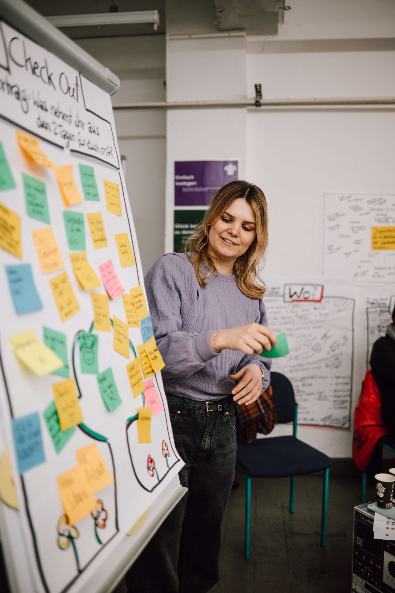
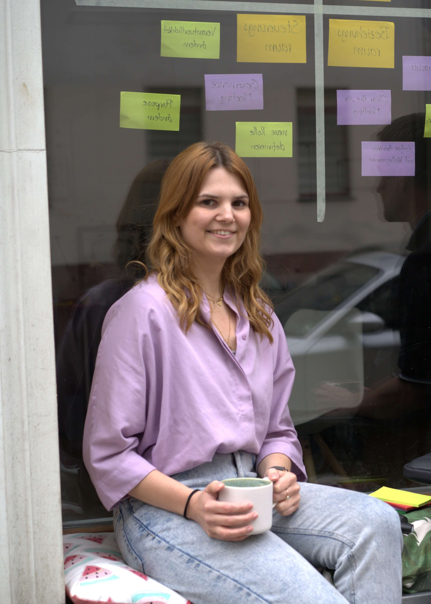
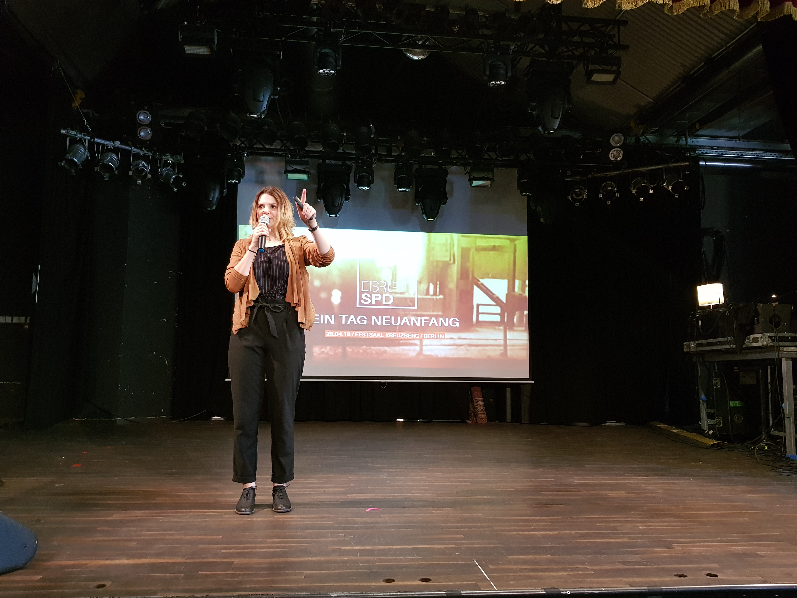
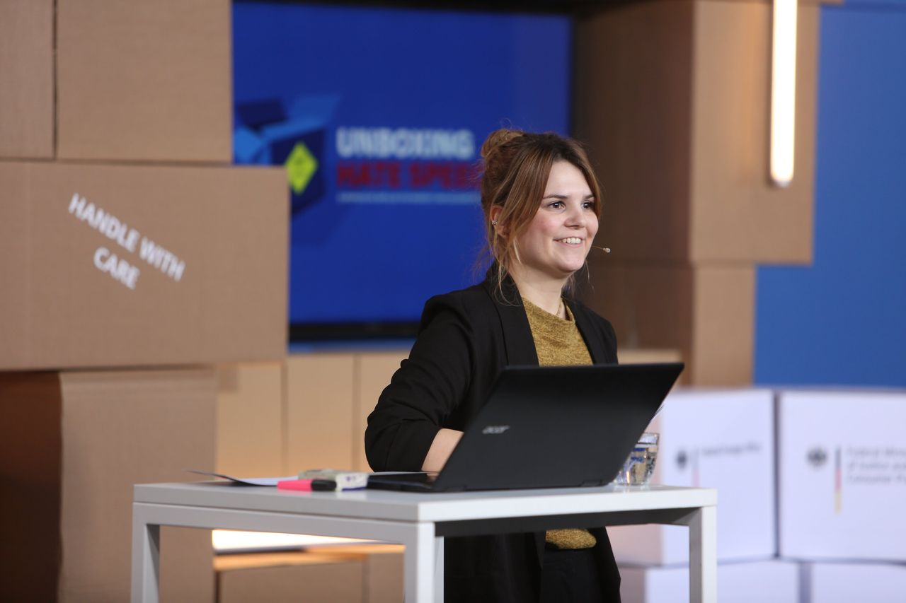
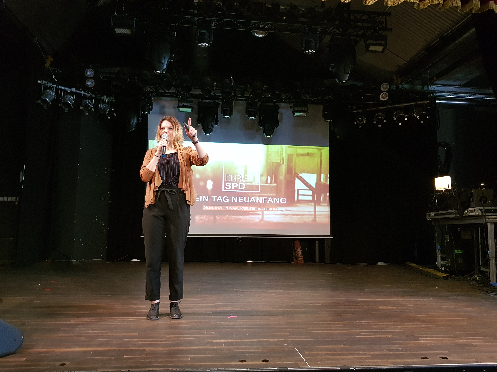
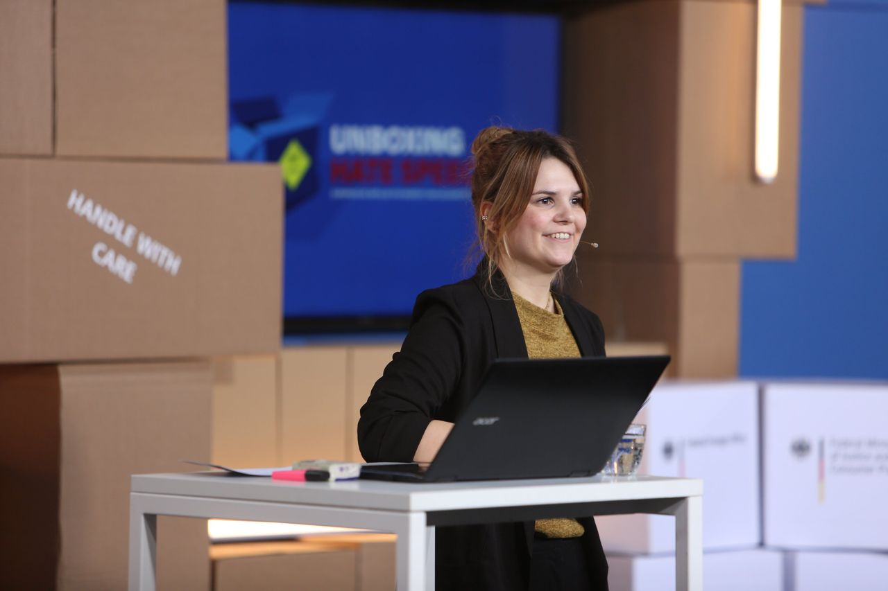

Co-Agilität
Mit dem Konzept der Co-Agilität haben Stephanie Sievers und ich ein Meta-Framework entwickelt, das die Stärken der Agilität mit klassischen Organisationswelten verbindet. Denn Agilität ist zwar mittlerweile in den meisten Organisationen angekommen, bleibt jedoch oft auf einzelne innovationsfreudige Teams oder Projekte beschränkt – ohne die gesamte Organisation zu erreichen. So entstehen „agile Silos“, die das volle Potenzial ungenutzt lassen. In dem Buch wollen wir unsere Erfahrungen teilen und praktische Tipps anbieten.

Co-agile Organisationsentwicklung
Tanja Hille, Stephanie Sievers
2025, 62 Seiten, Springer Gabler, ISBN: 978-3-658-46128-7
Buch: 14,99€, E-Book: 9,99€
bestellen co-agilität.de
Weitere Veröffentlichungen
- In Lernschleifen zur agilen Wirksamkeit – Ein Scrum-Projekt verändert die Kultur einer Verwaltung in der Zeitschrift für OrganisationsEntwicklung (ZOE), 2022
- Ein Weg aus dem agilen Silo im Fachmedium Innovative Verwaltung, 2021

 






 


